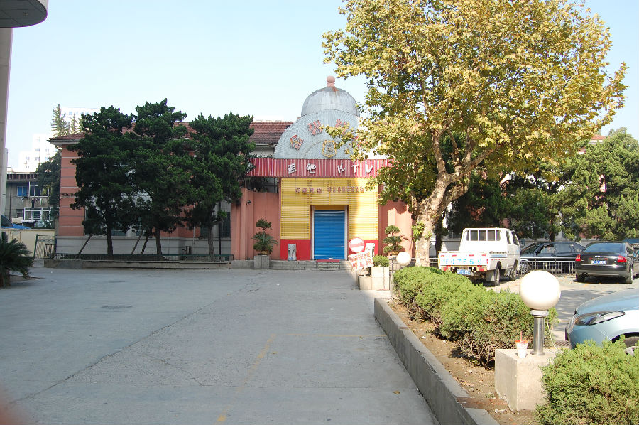

嘉兴市文物保护网 · 市级文物保护点 · 2020-11-09 · 原文

嘉兴工人文化宫大礼堂位于嘉兴市南湖区建设街道城东社区中山路嘉兴工人文化宫内，今大礼堂所在地，据民国《嘉兴新志》载，历为明、清、民国初嘉兴县衙，曾设有大堂、县丞署、主簿署、典吏署、签押房等建筑。1920年后，此地改作民国政府嘉兴地方法院分院，东紧邻民国嘉兴县政府。新中国成立后，政府将旧屋扩建成为今工人文化宫大礼堂，外貌已不复旧观。礼堂坐北朝南，平面呈“工”字形布局，占地面积为1936.7平方米，现供KTV酒吧等娱乐场所经营。内部已重新装修，具体结构不详。嘉兴工人文化宫大礼堂形制较大，是嘉兴市区仅存的礼堂，反映了嘉兴在建国后的面貌，具有较高的历史和科学价值。2009年公布为嘉兴市文物保护点。